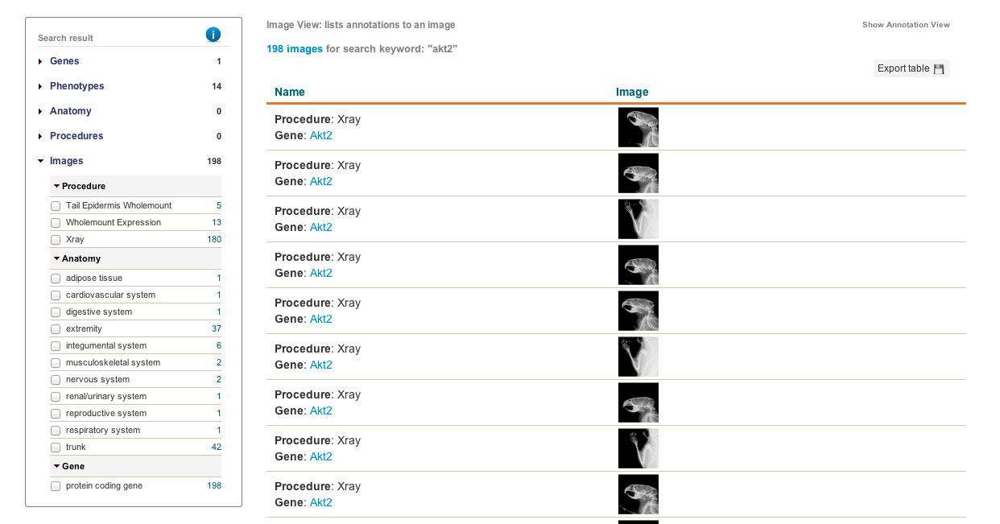

IMPC images page documentation
IMPC images page documentation
Image details
- Explore Image Data
- The IMPC portal offers images that are annotated with gene associations, Mouse Anatomy (MA) and Mammalian Phenotype (MP) terms. To search for images associated with the gene symbol ""Akt2", type Akt2 into the search box at the top of the page and then click on the images link at the side.
A list with categories of images associated to the Akt2 is then displayed on the left. Click on these categories to see sub-categories and their respective counts of images associated with that category. You can also search for genes using MGI identifiers.
To search for images associated to an anotomy term you can use MA identifiers or terms such as blood vessel (MA:0000060) in the search box. Click here to find out more where the images are from and how they are annotated.

- Imported Images
- The IMPC portal offers images that are annotated with Mouse Annatomy (MA) and Mammalian Phenotype (MP) terms. Currently images and their annotations are from legacy data from the MGP project at the Wellcome Trust Sanger Institute where the terms were manually annotated by researchers.
However in the future, the portal will also contain images from the IMPC standardised screens https://www.mousephenotype.org/impress. The procedures highlighted in red will have image data collected.

- How often are images updated?
-
Images from the MGP resource at Wellcome Trust Sanger Institute are updated as needed. The process of obtaining images from other IMPC centres is still being developed.
- How do I get image data/ download?
- Individual images may be downloaded by right clicking and saving to your hard drive. Batch downloading of images is in development.